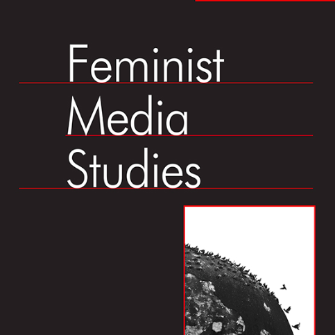
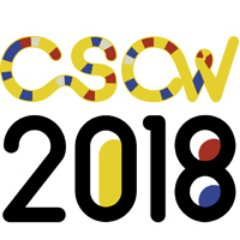
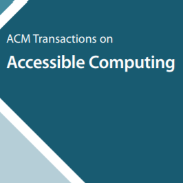
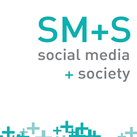
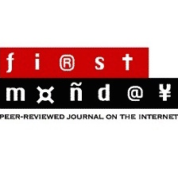
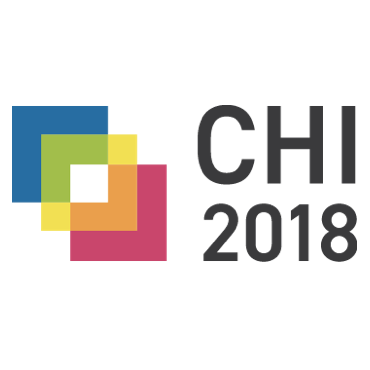
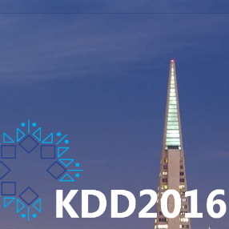
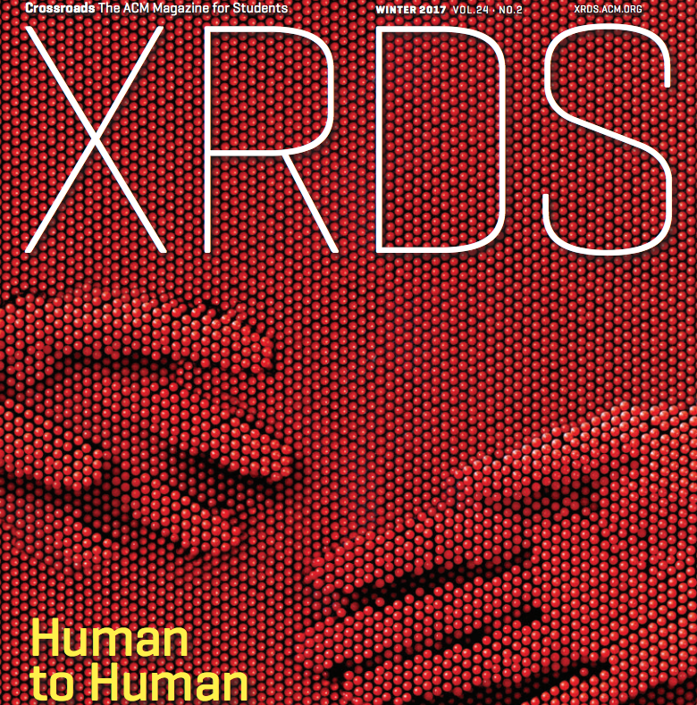

OLIVER L.
HAIMSON,
Ph.D.
Assistant Professor

PUBLICATIONS
Journal Publications (Peer-Reviewed)

Tumblr was a Trans Technology: The Meaning, Importance, History, and Future of Trans Technologies
Oliver L. Haimson, Avery Dame-Griff, Elias Capello, Zahari Richter
Feminist Media Studies, published online first October 2019, 17 pages
open-access linkPDF [blog]

The Language of LGBTQ+ Minority Stress Experiences on Social Media
Koustuv Saha, Sang Chan Kim, Manikanta D. Reddy, Albert J. Carter, Eva Sharma, Oliver L. Haimson, Munmun De Choudhury
Proceedings of the ACM Human Computer Interaction (PACM HCI),
3(CSCW), Article 89, November 2019, 21 pages (to be presented at CSCW 2019)
[acceptance rate: 31%]
PDF

Mapping Gender Transition Sentiment Patterns via
Social Media Data: Toward Decreasing Transgender Mental Health Disparities
Oliver L. Haimson
Journal of the American Medical Informatics Association (JAMIA) (special issue on Health Informatics and Health Equity: Improving Our Reach and Impact), 26(8-9), August/September 2019 (first published online May 2019), p. 749-758
open-access linkPDF
blog

Social Media as Social Transition Machinery
Oliver L. Haimson
Proceedings of the ACM Human Computer Interaction (PACM HCI),2(CSCW), Article 63, November 2018, 26 pages
[acceptance rate: 26%] Best Paper Honorable Mention
[link]
PDF
blog

Social Support, Reciprocity, and Anonymity in Responses to Sexual Abuse Disclosures on Social Media
Nazanin Andalibi, Oliver L. Haimson, Munmun De Choudhury, Andrea Forte
ACM Transactions on Computer-Human Interaction (TOCHI), 25(5), October 2018
[link]
PDF

Relationship Breakup Disclosures and Media Ideologies on Facebook
Oliver L. Haimson, Nazanin Andalibi, Munmun De Choudhury, Gillian R. Hayes
New Media and Society, 20(5), May 2018 (first published online June 2017)
[link]
PDF

The Tangible Desktop: A Multimodal Approach to Nonvisual Computing
Mark S. Baldwin, Gillian R. Hayes, Jennifer Mankoff, Oliver L. Haimson,
Scott E. Hudson
ACM Transactions on Accessible Computing (TACCESS) 10(3), August 2017
[link]
PDF

Baking Gender Into Social Media Design: How Platforms Shape Categories for Users
and Advertisers
Rena Bivens, Oliver L. Haimson
Social Media + Society (special issue on Making Digital Cultures of Gender and
Sexuality with Social Media), 2(4), October-December 2016
open-access link
PDF
blog

Constructing and Enforcing "Authentic" Identity Online: Facebook, Real Names, and
Oliver L. Haimson, Anna Lauren Hoffmann
First Monday (special issue on A Decade of Web 2.0: Reflections, Critical
Perspectives, and Beyond), 21(6), June 2016
open-access link
Supplementing Public Health Inspection via Social Media
John Schomberg, Oliver L. Haimson, Gillian R. Hayes, Hoda Anton-Culver
PLoS ONE 11(3), March 2016
open-access link
PDF
Mobile Video Modeling for Employment Interviews for Individuals with Autism
Gillian R. Hayes, V. Erick Custodio, Oliver L. Haimson, Kathy Nguyen, Kathryn
E. Ringland, Rachel Rose Ulgado, Aaron Waterhouse, Rachel Weiner
Journal of Vocational Rehabilitation 43(3), October 2015
link
Evaluating a Collaborative iPad Game’s Impact on Social Relationships for
Children with Autism Spectrum Disorder
LouAnne E. Boyd, Kathryn E. Ringland, Oliver L. Haimson, Helen Fernandez,
Maria Bistarkey, Gillian R. Hayes
ACM Transactions on Accessible Computing (TACCESS) 7(1), June 2015
[link]
PDF
Full Conference Publications (Peer-Reviewed)

“Genderfluid” or “Attack Helicopter”: Responsible HCI Research Practice with
Non-Binary Gender Variation in Online Communities
Samantha Jaroszewski, Danielle Lottridge, Oliver L. Haimson, Katie Quehl
ACM CHI Conference on Human Factors in Computing Systems, April 2018
[acceptance rate: 26%]
[link]
PDF

Changes in Social Media Affect, Disclosure, and Sociality for a Sample of Transgender
Americans in 2016’s Political Climate
Oliver L. Haimson, Gillian R. Hayes
ICWSM Conference on Web and Social Media, May 2017
[acceptance rate: 14%]
[link]
PDF
blog

What Makes Live Events Engaging on Facebook Live, Periscope, and Snapchat
Oliver L. Haimson, John C. Tang
ACM CHI Conference on Human Factors in Computing Systems, May 2017
[acceptance rate: 25%]
[link]
PDF
blog
Class Confessions: Restorative Properties in Online Experiences of Socioeconomic Stigma
Eugenia Ha Rim Rho, Oliver L. Haimson, Nazanin Andalibi, Melissa Mazmanian, Gillian R. Hayes
ACM CHI Conference on Human Factors in Computing Systems, May 2017
[acceptance rate: 25%]
[link]
PDF

Firebird: Predicting Fire Risk and Prioritizing Fire Inspections in Atlanta
Michael Madaio, Shang-Tse Chen, Oliver L. Haimson, Wenwen Zhang, Xiang
Cheng, Matthew Hinds-Aldrich, Duen Horng (Polo) Chau, Bistra Dilikina
ACM SIGKDD Conference on Knowledge Discovery and Data Mining, August 2016
[full paper acceptance rate: 12%] Best Student Paper Runner-Up
[link]
PDF
site

Digital Footprints and Changing Networks During Online Identity Transitions
Oliver L. Haimson, Jed R. Brubaker, Lynn Dombrowski, Gillian R. Hayes
ACM CHI Conference on Human Factors in Computing Systems, May 2016
[acceptance rate: 23%] Best Paper Honorable Mention
[link]
PDF
Understanding Social Media Disclosures of Sexual Abuse Through the Lenses of Support Seeking and
Anonymity
Nazanin Andalibi, Oliver L. Haimson, Munmun De Choudhury, Andrea Forte
ACM CHI Conference on Human Factors in Computing Systems, May 2016
[acceptance rate: 23%]
[link]
PDF

“Hunger Hurts but Starving Works:” Characterizing the Presentation of Eating Disorders
Online
Jessica Pater, Oliver L. Haimson, Nazanin Andalibi, Elizabeth Mynatt
ACM CSCW Conference on Computer-Supported Cooperative Work and Social Computing,
February 2016
[acceptance rate: 25%]
[link]
PDF

Online Inspiration and Exploration for Identity Reinvention
Oliver L. Haimson, Anne E. Bowser, Edward F. Melcer, Elizabeth F. Churchill
ACM CHI Conference on Human Factors in Computing Systems, May 2015
[acceptance rate: 23%]
[link]
PDF
On Vintage Values: The Experience of Secondhand Fashion Reacquisition
Anne E. Bowser, Oliver L. Haimson, Edward F. Melcer, Elizabeth F. Churchill
ACM CHI Conference on Human Factors in Computing Systems, May 2015
[acceptance rate: 23%]
[link]
PDF

Disclosure, Stress, and Support During Gender Transition on Facebook
Oliver L. Haimson, Jed R. Brubaker, Lynn Dombrowski, Gillian R. Hayes
ACM CSCW Conference on Computer-Supported Cooperative Work and Social Computing,
March 2015
[acceptance rate: 28%] Best Paper Honorable Mention
[link]
PDF
DDF Seeks Same: Sexual Health-Related Language in Online Personal Ads For Men
Who Have Sex With Men
Oliver L. Haimson, Jed R. Brubaker, Gillian R. Hayes
ACM CHI Conference on Human Factors in Computing Systems, April 2014
[acceptance rate: 23%]
[link]
PDF
Articles (Editor Reviewed)

How to Do Better with Gender on Surveys: A Guide for HCI Researchers
Katta Spiel, Oliver L. Haimson, Danielle Lottridge
ACM Interactions Magazine, July-August 2019
[link]
PDF
blog
A Conversation: Queer Digital Media Resources and Research
Mia Fischer, Oliver L. Haimson, Carmen Rios, Adrienne Shaw, Mitali Thakor, Jen Jack Gieseking, Daniel Cockayne
First Monday (special issue on Queer Internet Studies), 23(7), July 2018
open-access [link]

Digital and Physical Barriers to Changing Identities
Oliver L. Haimson
XRDS: Crossroads, The ACM Magazine for Students, Winter 2017
[link]
PDF
Short Papers and Posters (Lightly Peer-Reviewed)
Designing Technology to Support Safety for Transgender Women & Non-Binary People of Color
Denny Starks, Tawanna Dillahunt, Oliver L. Haimson
Designing Interactive Systems (DIS), June 2019
[link]
PDF
Helpful Information to Whom? An Intersectional Critique of the 'It Gets Better Project'
Blake W. Hawkins, Nazanin Andalibi, Oliver L. Haimson
Proceedings of the Association for Information Science and Technology (ASIST), February 2019
[link]
Building an Online Community of Care: Tumblr Use by Transgender Individuals
Blake W. Hawkins, Oliver L. Haimson
GEWINN / Gender & IT Conference, May 2018
[link]
#ReproHealth: A State-Based Investigation of Reproductive Health Rights Policy and
Social Media Activity
Corrin Morgan, Aaron Noble, Erica Alexander, Jerome Watts, Oliver L. Haimson
iConference, March 2016
PDF
User Response to Facebook’s Custom Gender Options
Oliver L. Haimson, Jed R. Brubaker, Courtney Loder, Lynn Dombrowski, Gillian R. Hayes
iConference, March 2015
PDF
Using Depression Analytics to Reduce Stigma via Social Media: BlueFriends
Oliver L. Haimson, Kathryn E. Ringland, Simone Lanette, Christine T. Wolf
iConference (Social Media Expo), March 2014
PDF
Information Occupation: Using Information Science to Explore Occupy Wall Street
Oliver L. Haimson, Josh Cartagena
iConference, February 2013
PDF
Workshops and Panels Co-Organized
Life Transitions and Social Technologies: Research and Design for Times of Life Change
Oliver L. Haimson, Bryan Semaan, Brianna Dym, Joey Chiao-Yin Hsiao, Daniel Herron, Wendy Moncur
Workshop at CSCW, November 2019
[link]/
PDF site
HCI and Sensitive Life Experiences
Daniel Herron, Nazanin Andalibi, Oliver L. Haimson, Wendy Moncur, Elise van den Hoven
Workshop at NordiCHI, October 2016
PDF
Being Queer in Computing Environments
Gopi Kannabiran, Steve Chenoweth, Oliver L. Haimson, Kyle Overton
Birds of a Feather session at ACM Richard Tapia Celebration of Diversity in Computing Conference, September 2016
Between the Lines: Reevaluating the Online/Offline Binary
Sarah Vieweg, Oliver L. Haimson, Michael Massimi, Kenton O'Hara, Elizabeth F. Churchill
Workshop at CHI, April 2015
PDF
Exploring Gender, Race, and Sexuality with Social Media Data
Oliver L. Haimson, Amanda Menking, Jordan Eschler, Ingrid Erickson, Gillian R. Hayes
Workshop at iConference, March 2015
PDF
Facebooking in "Face:" Complex Identities Meet Simple Databases
Mark Handel, Rena Bivens, Jed R. Brubaker, Oliver L. Haimson, Jessa Lingel,
Svetlana Yarosh
Panel at CSCW, March 2015
PDF
Workshop Papers (Lightly Peer-Reviewed)
Gender Inclusivity at SIGCHI
Oliver L. Haimson
CHInclusion Workshop, May 2019
PDF
It Gets Better, But it Takes More Than a YouTube Video: Reconsidering Online Mental Health Campaigns
Blake W. Hawkins, Oliver L. Haimson, Nazanin Andalibi
CHI 2018 Symposium on Computing and Mental Health, April 2018
PDF
Creating Online Places of Care: The Experiences of Transgender People Using Tumblr to Maintain Positive Mental Health
Blake W. Hawkins, Oliver L. Haimson
CHI 2018 Design for Sexual Wellbeing workshop, April 2018
Opportunities and Challenges for Transgender People in Digital Spaces
Oliver L. Haimson
iConference Workshop on Vulnerable Communities in the Digital Age, March 2017
PDF
Ethical Obligations When Asking Research Participants to View Unpredictable Content
Oliver L. Haimson, John C. Tang
ACM Group Ethics Workshop, November 2016
PDF
Anonymity, Pseudonymity, and Gender Categorization as Social Justice Issues in HCI
Oliver L. Haimson, Nazanin Andalibi
CHI Workshop on Exploring Social Justice, Design, and HCI, May 2016
PDF
Social Signaling on Facebook After Relationship Dissolution
Oliver L. Haimson, Nazanin Andalibi
CSCW Workshop on Unpacking Social Signaling Theory for Social Computing Systems
Analysis and Design, February 2016
PDF
Identifying and Prioritizing Fire Inspections: A Case Study of Predicting Fire Risk in
Atlanta
Michael Madaio, Oliver L. Haimson, Wenwen Zhang, Xiang Cheng, Matthew Hinds-Aldrich,
Duen Horng (Polo) Chau, Bistra Dilikina
Bloomberg Data for Good Exchange, September 2015
PDF
Toward Trans Inclusion in Feminist HCI
Oliver L. Haimson, Gillian R. Hayes
CSCW Workshop on Feminism and Feminist Approaches in Social Computing, March 2015
PDF
Marginalized Populations and Research Ethics Online
Oliver L. Haimson, Kathryn E. Ringland, Gillian R. Hayes
CSCW Workshop on Ethics for Studying Sociotechnical Systems in a Big Data World,
March 2015
PDF
Understanding Gender Transition on Social Media to Design Technology for Changing
Identities
Oliver L. Haimson, Gillian R. Hayes
CHI Workshop on Designing Technology for Major Life Events, April 2014
PDF
Informally-Published Written Work
Making Space for Them, Her, Him, and ‘Prefer not to Disclose’ in Group Settings: Why Pronoun-Sharing is Important but Must Remain Optional
Oliver L. Haimson, Lee Airton
National Center for Institutional Diversity, June 2019
[link]
Why "Standing in Your Identity Corner" Doesn’t Work: Against Forced Disclosure of Marginalized Identities as Casual Icebreakers
Oliver L. Haimson
National Center for Institutional Diversity, October 2018
[link]
Ethical Use of Visual Social Media Content in Research Publications
Oliver L. Haimson, Nazanin Andalibi, Jessica Pater
Australasian Human Research Ethics Consultancy Services (AHRECS) Research Ethics Monthly blog, December 2016
[link]
A Predictive Model for Fire Risk in Atlanta
Oliver L. Haimson
Data Science for Social Good – Atlanta blog, July 2015
[link]
Revisiting the Online/Offline Binary: Conceptualizing Factors Influencing Self-disclosure
Nazanin Andalibi, Oliver L. Haimson
Complicating the On/Offline Binary blog, June 2015
[link]
Hello from the DSSG-ATL Fire team!
Oliver L. Haimson
Data Science for Social Good – Atlanta blog, May 2015
[link]
Book Review: Allucquère Rosanne Stone’s The War of Desire and Technology at the
Close of the Mechanical Age, Twenty Years On
Oliver L. Haimson
The Geek Anthropologist, May 2015
[link]
Media Coverage
LGBTQ+ Youth Prefer to Seek Mental Health Help Digitally
Emily Dreyfuss
WIRED, June 2019
[link]
Actually, We Should Not All Use They/Them Pronouns: A response to a recent Scientific American essay
Alex Hanna, Nikki L Stevens, Os Keyes, Maliha Ahmed
Scientific American, May 2019
[link]
What Tumblr's Porn Ban Really Means
Steven W. Thrasher
The Atlantic, December 2018
[link]
Asking People to Google Their Questions About the LGBTQ Community is Appealing -
But Risky
Heather Dockray
Mashable, August 2018
[link]
Can Algorithms Predict House Fires?
Jonathan Jay
Data-Smart City Solutions, March 2017
[link]
Embracing Analytics: How Communities Around the Country are Utilizing Data Analytics to
Predict a Host of Risk Factors and Reduce Fires
Jesse Roman
National Fire Protection Association Journal, May 2016
[link]
Thinking Deep Thoughts, Helping Others, and Traveling the World: The Perks of a Career
in Research
Hannah Hiles
i3 Alert Newsletter, April 2016
[link]
How Male Rape Survivors are Finding Help Online: Researchers Find That Men Use Throwaway
Reddit Accounts to Disclose Sexual Abuse — Some for the Very First Time
Tracy Clark-Flory and Leigh Cuen
Vocativ.com, February 2016
[link]
Sexual Assault Survivors, Especially Men, Find Refuge in Online Anonymity: Drexel Study
Examines Anonymous Posts About Abuse on Reddit
Sharon Lurye
PhillyVoice.com, February 2016
[link]
Survivors of Sexual Abuse Find Support in Online Anonymity
Traci Pedersen
PsychCentral.com, February 2016
[link]
When Computing Equals Social Good
Georgia Tech College of Computing, July 2015
[link]
Facebook is Now Allowing Users to Identify as Any Gender They Want
Jorge Rivas
Fusion.net, February 2015
[link]
 haimson@umich.edu
haimson@umich.edu @oliverhaimson
@oliverhaimson Oliver Haimson
Oliver Haimson Oliver Haimson
Oliver Haimson